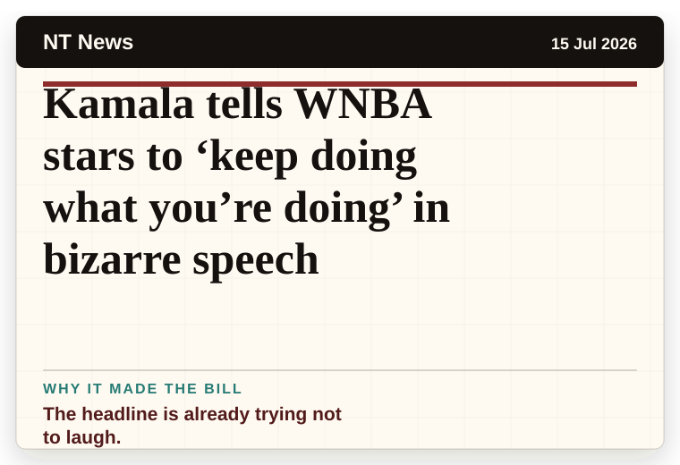
NT News
Australia
Kamala tells WNBA stars to ‘keep doing what you’re doing’ in bizarre speech
The headline is already trying not to laugh.
The latest daily picks, linked back to the original sources. Search the room, pick a source, or follow a headline out to the full story.
Record updated: 19 Jul 2026, 07:50 AM AEST
Showing 20 headline candidates from the refresh run completed on 19 Jul 2026, 07:50 AM AEST.

The headline is already trying not to laugh.
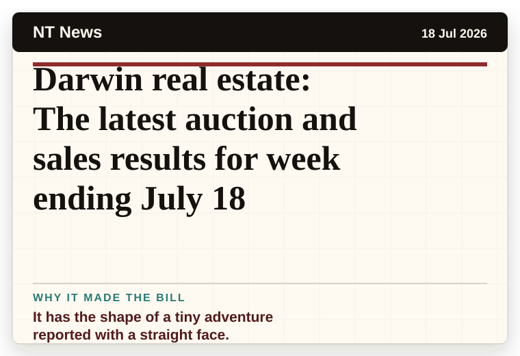
It has the shape of a tiny adventure reported with a straight face.
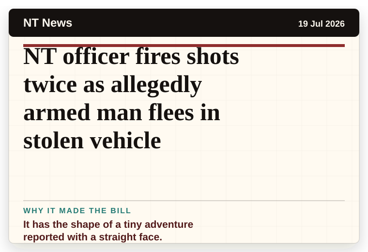
It has the shape of a tiny adventure reported with a straight face.
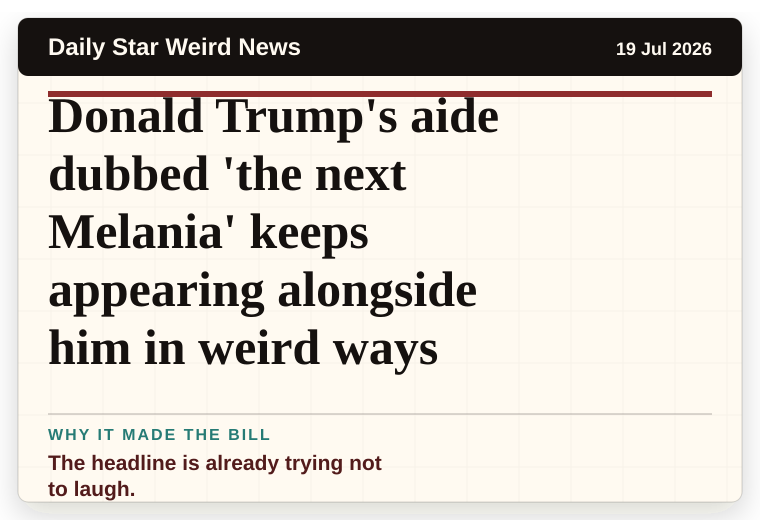
The headline is already trying not to laugh.

A mystery is doing a lot of work in a very small sentence.

It has the shape of a tiny adventure reported with a straight face.
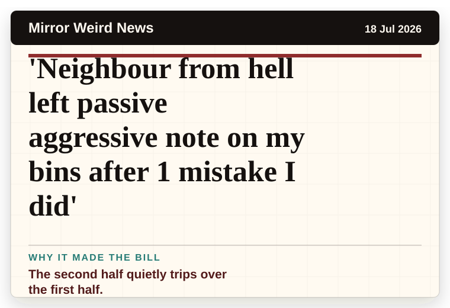
The second half quietly trips over the first half.
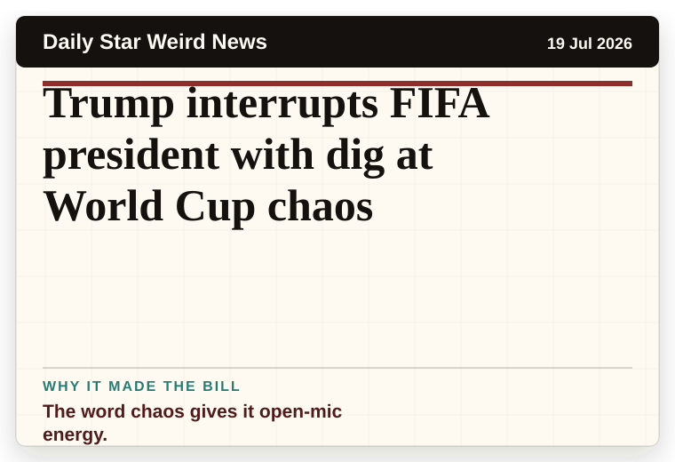
The word chaos gives it open-mic energy.
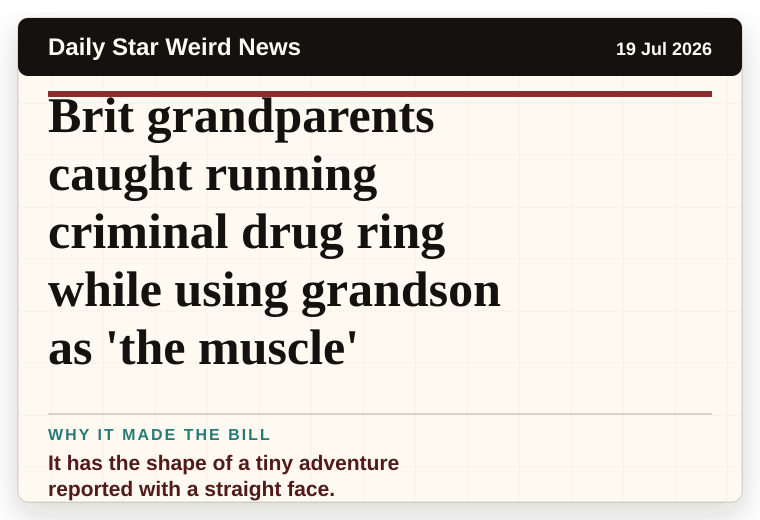
It has the shape of a tiny adventure reported with a straight face.

A wonderfully specific detail has taken centre stage.
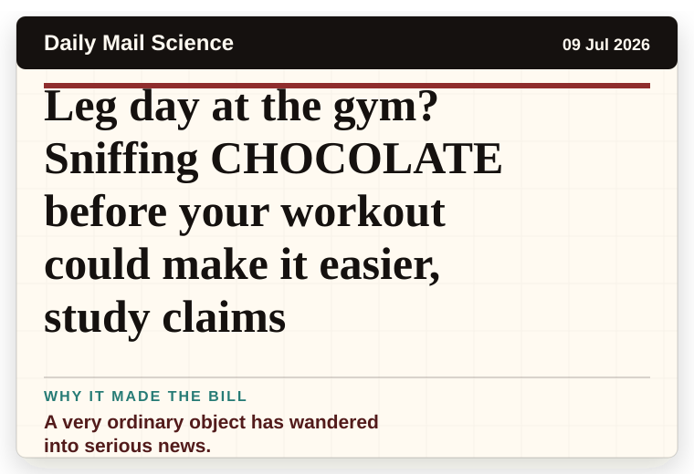
A very ordinary object has wandered into serious news.

The scale is doing deadpan comedy.
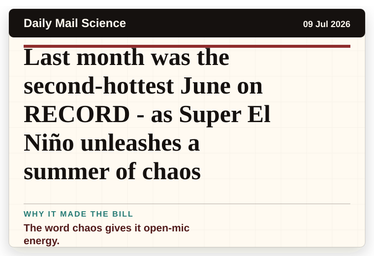
The word chaos gives it open-mic energy.
It has the shape of a tiny adventure reported with a straight face.
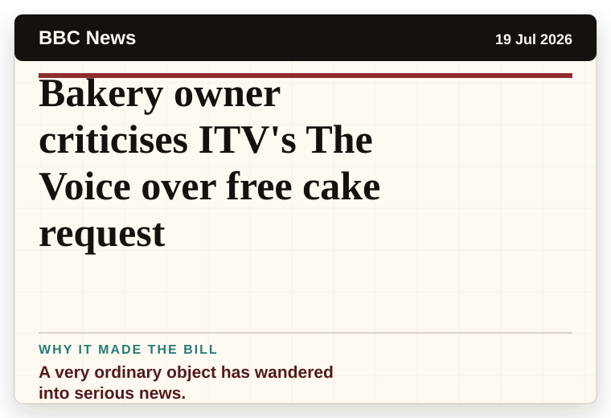
A very ordinary object has wandered into serious news.
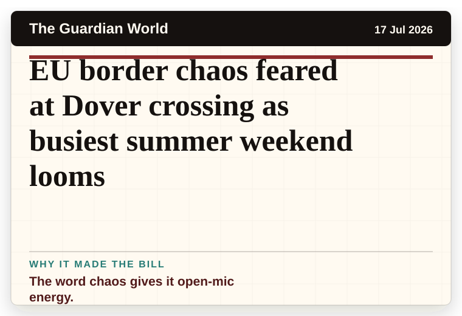
The word chaos gives it open-mic energy.
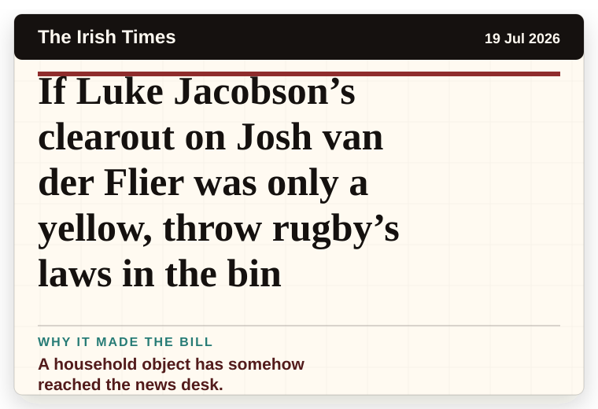
A household object has somehow reached the news desk.
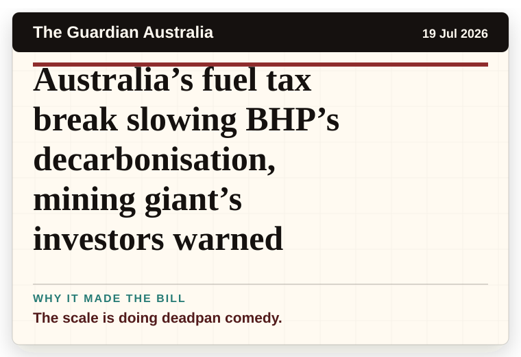
The scale is doing deadpan comedy.
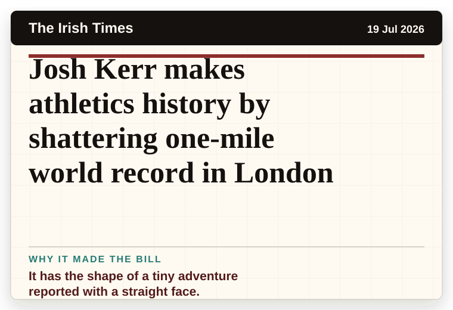
It has the shape of a tiny adventure reported with a straight face.
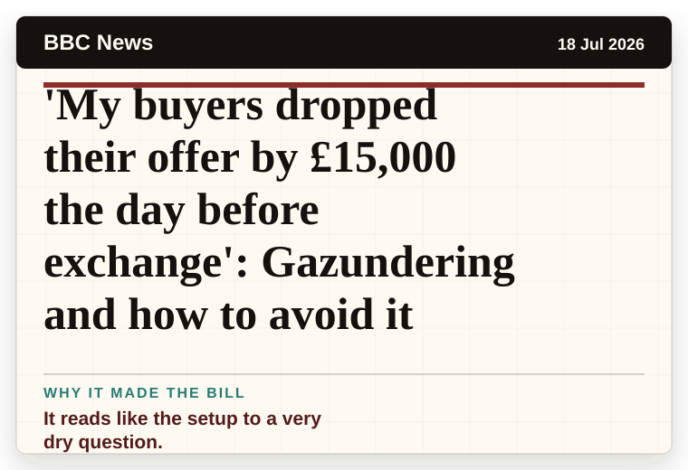
It reads like the setup to a very dry question.